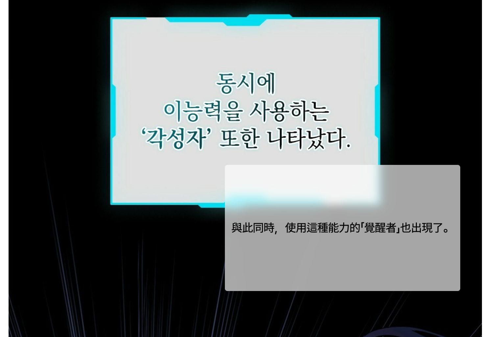
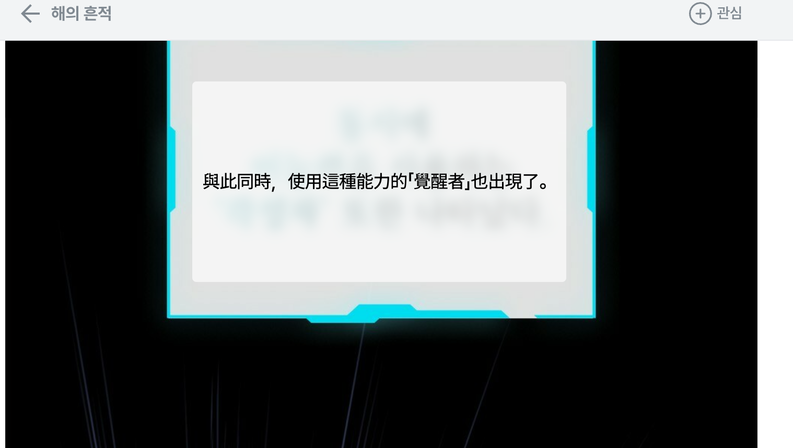

框一格，
讀懂整篇漫畫。
MangaLens 是一個讓你在任意漫畫頁面框選區域、即時翻譯韓文與日文的 Chrome 擴充套件。本文帶你從安裝到熟練操作，三十分鐘內成為老手。


圖｜左圖示範同頁顯示原文與譯文的即時效果；右圖是整理後更適合直接閱讀的成品畫面。
閱讀外文漫畫時，最累的不是看不懂，而是要在分頁、Google 翻譯、回到漫畫之間來回切換。MangaLens 把這條動線壓縮到一個動作：在頁面上拉一個框。
chrome://extensions/ 開啟開發者模式，載入未封裝項目，選擇 manga-lens 資料夾。
把擴充套件裝進瀏覽器
MangaLens 還沒上 Chrome Web Store，請以「載入未封裝項目」的方式安裝。流程一次設定，之後不需要重做。
桌面版 Chrome / Edge / Brave
- 下載或
git clonemanga-lens倉庫到本地，解壓縮。 - 在網址列輸入
chrome://extensions/並 Enter。 - 右上角開啟「開發人員模式」開關。
- 左側點擊「載入未封裝項目」按鈕。
- 在檔案選擇器中，選取剛剛解壓的
manga-lens資料夾。 - 完成後，工具列會多一個書本圖示，每個網頁的右下角也會出現浮動工具列。
Android 手機（Kiwi Browser 等）
- 把
manga-lens資料夾打包成.zip。 - 在支援擴充功能的瀏覽器（如 Kiwi Browser）的擴充功能頁面，匯入這個 zip 檔。
- 授予權限後，回到漫畫頁面，用手指長按拖曳即可框選。
選一個翻譯引擎，貼上 API Key
MangaLens 自己不翻譯，它呼叫你的雲端模型來做 OCR 與翻譯。這意味著你需要在任一支援的服務申請一把 API Key——大多數都有免費額度，足夠長時間使用。
如果你完全沒概念該選哪個，從 Gemini Vision 開始。它一個請求就同時做 OCR 和翻譯、手寫字也能辨識、並且 Google AI Studio 提供免費額度。
七種引擎，分頭擔當不同情境
Gemini Vision
單一模型完成 OCR + 翻譯。手寫字辨識能力最好，是大多數人的最佳起點。
Local API Proxy
連到自架的 OpenAI 相容代理。可接自己微調的模型或本機部署。
OpenAI 相容
支援任何走 OpenAI 格式的 API，包括 Groq、OpenRouter、DeepInfra 等。
Groq Vision + LLM
Llama 4 Scout 做 OCR、再讓另一個 LLM 翻譯。免費、極快。
Cloud Vision + LLM
Google Cloud Vision 做 OCR、再交給 Gemini 或 LLM 翻譯。印刷體精準度最強。
純 OCR 模式
只辨識文字、不翻譯，把原文丟回給你。用來校對或自己學語言。
OCR Space + 翻譯
OCR Space 做辨識、再用 Google 翻譯或 Gemini 翻譯。完全免費的入門組合。
引擎能力比一比
| 引擎 | 手寫字 | 印刷體 | 翻譯品質 | 速度 | 費用 |
|---|---|---|---|---|---|
| Gemini Vision | ★★★ | ★★★ | ★★★ | ★★☆ | 免費額度 |
| Local API Proxy | ★★★ | ★★★ | ★★★ | ★★☆ | 自架 |
| OpenAI 相容 | ★★☆ | ★★★ | ★★☆ | ★★★ | 依服務而定 |
| Groq Vision + LLM | ★★☆ | ★★☆ | ★★☆ | ★★★ | 免費 |
| Cloud Vision + LLM | ★☆☆ | ★★★ | ★★★ | ★★☆ | 免費額度 |
| OCR Space + 翻譯 | ★☆☆ | ★★☆ | ★★☆ | ★★☆ | 免費 |
API Key 去哪裡拿
| 服務 | 申請位置 | 費用 |
|---|---|---|
| Gemini | Google AI Studio | 免費額度 |
| Groq | Groq Console | 免費額度 |
| Cloud Vision | GCP Console | 每月 1,000 次免費 |
| OCR Space | ocr.space | 免費（或留白用公用 Key） |
把 Key 貼進 Popup
- 點擊瀏覽器右上的 MangaLens 圖示，叫出 Popup 設定面板。
- 選擇來源語言：韓文或日文。
- 選擇文字方向：通常用「自動偵測」即可；日漫直排可手動指定。
- 從翻譯引擎下拉選單挑一個（建議從 Gemini Vision 開始）。
- 把對應的 API Key 貼進去——所有變更會自動儲存，不用再按按鈕。
設定一次，一勞永逸。MangaLens 把所有 Key 存在瀏覽器本地，不會送到我們的伺服器——因為根本沒有伺服器。
從框選到結果框的每一個動作
設定完 Key 之後，所有的事都發生在漫畫頁面上。MangaLens 不會把你帶離閱讀現場，所有控制項都浮在頁面之上，看完即關。
啟動框選
三種啟動方式擇一：
- 按下快捷鍵 Alt + S（預設）。
- 點擊頁面右下角浮動工具列的 📷 框選按鈕。
- 從 Popup 點擊 📷 開始框選翻譯大按鈕。
啟動後，畫面會被半透明遮罩覆蓋，並出現十字游標。
拉出一個矩形
- 桌面：按住滑鼠左鍵，拖曳出涵蓋整段對話泡泡的矩形，放開後立即送出。
- 手機：用手指按住拖曳。注意手機端不能截全頁，要確保框選的內容是頁面上實際可見的圖片元素。
- 不想框了？按 Esc 取消。
翻譯結果框，能做的比想像多
| 操作 | 桌面 | 手機 |
|---|---|---|
| 移動結果框位置 | 直接拖曳 | 手指拖曳 |
| 對照原文 | 長按結果框 0.4 秒，變透明 | 長按變透明 |
| 重新翻譯（換引擎或重試） | hover →「🔄 重翻」 | 輕點 →「🔄 重翻」 |
| 複製譯文到剪貼簿 | hover →「📋 複製」 | 輕點 →「📋 複製」 |
| 關閉這一個 | hover →「✕」 | 輕點 →「✕」 |
| 清除頁面上全部結果框 | 浮動工具列「🗑 清除」 | |
連續框選模式：一格接一格
在工具列或 Popup 勾選「連續框選模式」。翻完一格之後，工具列按鈕會變成「▶ 繼續框選」——你只需要先把頁面捲到下一格，再點擊一下，就能立刻框選下一格，不需要重新按快捷鍵。
對於要連續看完一整話的讀者，這個模式可以省下一半的滑鼠移動。
偏好設定
Popup 底部還有三個小設定：
- 頁內快捷鍵：點擊輸入框後直接按下你要的組合鍵（例如 Ctrl+Q）。這個快捷鍵只在網頁內有效。Chrome 全域快捷鍵需到
chrome://extensions/shortcuts設定。 - 顯示網頁浮動工具列：右下角的小工具列。如果覺得擋畫面，可以關掉，純用快捷鍵。
- 連續框選模式：上面說過了。
使用前後常被問的事
翻譯免費嗎？要不要付錢？
MangaLens 本體完全免費，沒有訂閱也沒有買斷。但因為翻譯實際上是呼叫雲端模型，所以費用看你選哪個引擎：
- Gemini 與 Groq 都有充足的免費額度，一般個人讀者幾乎不會超出。
- Cloud Vision 每月前 1,000 次免費，超過才開始計費（每千次約 1.5 美金）。
- OCR Space 完全免費，留白即可使用公用 Key。
我的 API Key 會被傳到哪裡？
API Key 只存在你瀏覽器的 chrome.storage.local，不會傳到 MangaLens 開發者那裡——因為 MangaLens 沒有後端伺服器。
實際的 API 請求是直接從你的瀏覽器送到 Google、Groq 等服務商；它們會看到請求內容，這也是它們的隱私政策該負責的範圍。
為什麼框選後一直顯示「未辨識到文字」？
三個常見原因：
- 框得太小或太歪：把整段對話泡泡完整框進去，留一點邊距。
- 是手寫字，但你選了傳統 OCR：改用 Gemini Vision 或 Groq Vision。
- 是直排文字，但你用 OCR Space：OCR Space 不支援直排，改用 Gemini / Groq / Cloud Vision。
支援哪些網站？
所有網站都支援，因為 MangaLens 用 <all_urls> 權限，並不針對特定漫畫平台。任何能在瀏覽器裡看到的圖片都能框選翻譯。
手機版會不會比桌面慢？
翻譯本身不會。但手機瀏覽器的截圖能力比較弱，所以框選時要確保截到的是頁面上實際可見的圖片元素，不是空白區域。如果手機端常失敗，建議改用桌面版。
能換成翻譯成英文 / 日文嗎？
目前的版本，翻譯輸出固定為繁體中文，這是因為 MangaLens 主要為繁中讀者設計。如果你想自己改，可以修改 background.js 裡的提示詞模板——這是開源專案，歡迎發 PR。
更新擴充套件後，新功能沒生效？
幾乎都是同一個原因：網頁忘記重新整理。Chrome 在你閱讀漫畫的時候已經把舊的 content script 注入頁面了，新的程式碼要等下一次載入頁面時才會生效。按 F5 重新整理一下就會回來。
遇到紅字訊息時，照表操課
結果框可能會顯示錯誤訊息而不是譯文。下表整理了所有看得到的錯誤訊息與解法。
| 錯誤訊息 | 怎麼解 |
|---|---|
| API Key 無效或已過期 | 到對應的服務商網站重新檢查或申請一把新的 Key。注意是否完整貼上（沒漏字元）、是否誤用了到期的測試 Key。 |
| 權限不足，需要啟用 API | 到 GCP Console，啟用對應的 API（例如 Cloud Vision API、Generative Language API）。GCP 的服務需要明確啟用才能呼叫。 |
| 模型名稱錯誤或不存在 | 檢查 Popup 裡的模型名稱拼寫。每個服務商的模型名稱會變動，請對照官方文件。 |
| 請求過於頻繁 | 等個 30 秒再試。如果常發生，代表你超過免費額度的速率限制，可換另一把 Key 或升級方案。 |
| 截圖失敗（手機端） | 手機瀏覽器截圖 API 較受限。確認你框選的是頁面上有可見的圖片元素，不是 CSS 背景或被 lazy-load 還沒載入的圖片。 |
| 無法連線 | 檢查網路。如果用 Local API Proxy，確認 Proxy URL 正確、服務有在跑、且不需要加 /v1 後綴。 |
| 未辨識到文字 | 框選區域可能沒有文字、或 OCR 引擎讀不出手寫字。改用 Gemini 或 Groq Vision，並確保把對話泡泡完整框入。 |
如果上面沒有對應的訊息，到 GitHub 倉庫的 issue 區開一張，附上：用哪個引擎、錯誤訊息全文、瀏覽器版本。我們會盡快回覆。
原始碼與回報問題 —— github.com/cinminori/manga-lens